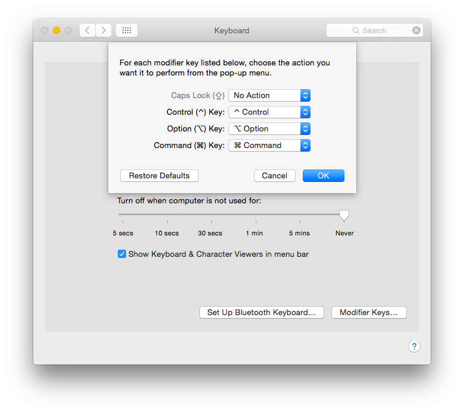
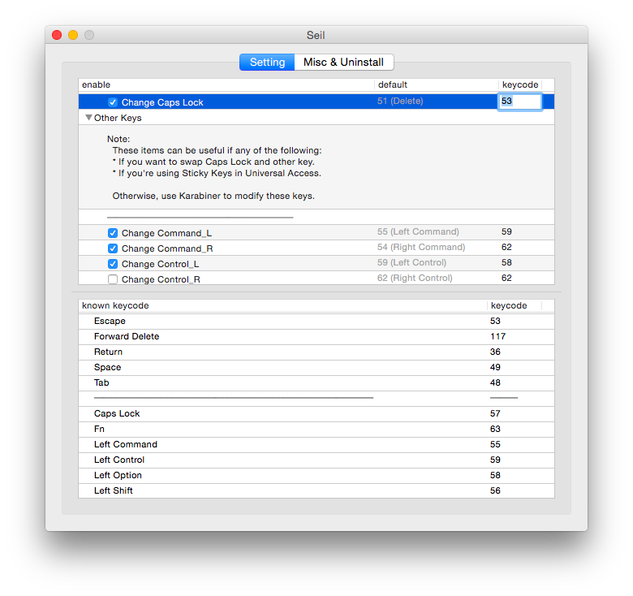

怎样交换键盘Escape和Caps Lock键
最近在微博上传得沸沸扬扬的一件事，说苹果的下一代Mac笔记本要把电源键放到Escape键的旁边，让一众Vim的用户觉得非常受不了。因为这个键他们一天不知道要按多少次，弄成这个样子一不小心就按错到旁边的关机键上，然后就😭了。
其实不管在哪个平台下，Windows、Mac、Linux，都有办法可以交换Escape键和Caps Lock键的位置。并且不仅仅是这两个，其他如Ctrl键、Alt键（Mac上叫option）、Win键（Mac上叫cmd，Linux下叫Super），都是可以交换位置的。
我们先看看为什么要这样做。
对Vim用户来说，Escape是一个特别关键的键，因为所有Vim的命令都需要按一下Escape切换到命令模式才可以。对Emacs用户来说，Escape好像没有那么重要，因为所有的命令都可以用Alt-x来输入（Emacs里管Alt叫Meta，所以Alt-x也叫M-x）。但是很多人没有特别注意的是，Emacs下几乎所有Alt-系的组合键，都可以用Escape来代替。比如Alt-x（按住Alt不放的同时，按一下x键）也可以用 Esc x 来代替（按一下Escape键放开，再按一下x键）。所以一个Emacs用户如果他的使用习惯是用Escape来代替Alt，那么Escape也是一个非常重要一天不知道要按多少次的键。
所以即使没有Mac这种设计，也已经有很多经常用Escape的用户把Escape键和Caps Lock键互换了位置。这样做的好处非常明显，几乎可以说有百利而无一害。首先你的左手尾指如果去按左上方的Escape键的话，手指的行程更长，肌肉要更紧张，时间长了，更容易得小指肌肉劳损。如果把Escape键的功能换到左边的Caps Lock键上的话，左小指的行程可以大大缩短，能够更有效的防止小指肌肉劳损的发生。Caps Lock这个功能使用的场景要比Escape少得多得多，而它占得位置有点儿太好了，所以我们可以考虑一下怎么给它搬个家😁。
搬家以后唯一的坏处是有时候你到了一台没有做过这种交换设置的新机器上（比如同事的机器），你可能会有点不习惯。但是如果Mac系统下个版本真的那样设计的话，说不定大家都会考虑本文中所描述的这个小技巧，这样这个坏处碰到的机率就更小了，不改的人反而要不习惯了😆。
下面我们系统地看一下如何在各大平台上更改这些个辅助键。
1 Mac
Mac系统自带的设置里允许你更改Caps Lock、Control、Option(Alt)、Command(Win/Super)键的功能，你可以在 System Preferences -> Keyboard -> Modifier Keys... 里找到这些选项。但是很可惜，这里面没有Escape键。不知道Mac以后的版本会不会把Escape键加上。请看下图：

所以我没有用Mac系统自带的这个更改辅助键的功能，最后使用的是一个叫“Seil”的软件，一个日本人开发的开源软件，以前的版本名字叫PCKeyboardHack，不知道为什么现在改名字了。下载请点 这里 。下面是一张截图，你在上半个窗口里可以比如把Caps Lock改成 53，因为在下半个窗口里你可以查到Escape的键值（keycode）就是53。

从图中你可以看到我把Mac的Command_L（也就是空格键左边的那个Command键，相当于Windows系统的左Win键）给改成了59，从下半窗口里你可以看到这个键对应的是Left Control。为什么这样做我们最后再说。包括其他所有的Ctrl/Option/Cmd我都换了一个遍😅。
最后要注意的一点是，从Mac系统自带辅助键设置的截图里你可以看到，我把Caps Lock的功能改成了No Action。这点很重要，好像不这样改的话我们即使用Seil也是无法把物理的Caps Lock键换成Escape功能的。并且最后我改完之后，原来的物理Escape键也还是Escape的功能，所以相当于我的键盘上就有了两个Escape，没有Caps Lock了。这个在我看来是可以接受的，因为我从来没有用过Caps Lock的功能，用Shift不一样能搞定么？在Emacs里我先输入小写的英文文本，然后有个功能可以让我把选中的文本变成大写的，这个也可以让我丢弃Caps Lock😄。 Seil的作者还写过一个叫 Karabiner 的软件，早先的版本叫 KeyRemap4MacBook。也很厉害，我一直在用，通过它实现了Mac下的DVP（Programmer's Dvorak）的键盘布局，和一些Sawfish的桌面快捷键功能。我的配置文件在 这里 ，感兴趣的同学可以关注一下这个软件😃。DVP的作者自己给Mac提拱了一个DVP的键盘布局，但是那个是一个英文输入法来着，你换成中文输入法之后，就又变成qwerty的布局了😅！
2 Windows
在Windows下换这些键的位置最简单了，在网上能查到很多种做法，比如用AutoHotkey这个软件，或者用Windows注册表。个人强烈推荐改注册表，因为AutoHotkey在XP之后开始有了管理员权限的问题，有些软件比如360的软件管家之类的上来就是系统权限，AutoHotkey以普通用户权限运行的话，改不了这些软件的键盘布局，最后有些改了有些没改，整个人搞不好的话会很分裂😆。 比如 这个文件 ，你下载之后双击把它导入注册表，重启电脑之后，应该就成了，Escape还是Escape，Caps Lock也成为Escape，Scoll Lock变成Caps Lock，原来的Scoll Lock功能则没有了。来源： Vim Wikia 。
3 Linux
在Linux下这些更改快捷键的功能可以用xmodmap，这个也是网上都很容易查到的，比如李杀大哥的 这个网页 。另一个很有用的配套工具是 xev，可以查看键盘上所有按键的键值。
也可以参考一下我的已经写好了的 .Xmodmap 文件，在 https://github.com/baohaojun/system-config/raw/master/etc/.Xmodmap 这里可以找到。
我还有好几个其他的版本，但主要的不同都是在其他的辅助键上，比如在这个笔记本键盘上，我要把红色标出的键改成右Alt键，

而在这个大键盘上，我会把红色标出的键改成右Win键：

为什么呢？请接着往下看。
4 更激进的键盘更改
所有的辅助键中，用的最多的是Ctrl，比如Ctrl-c/Ctrl-x/Ctrl-v，Emacs里就更不要说了。可是它却相对占了一个不怎么样的位置。杀哥曾给出几套解决方案，比如用鱼际去按Ctrl，用关节去按Ctrl，总之就是建议不要用指头去按，因为尾指弯曲得太厉害了，很容易劳损。但我最喜欢的解决方案（也是从杀哥的博客上看来的）试了一圈之后发现还是把Ctrl键和Alt键换一下位置，这样就可以用大拇指去按Ctrl了！而Alt键则用Escape代替（至少在Emacs下如此，其他的软件我就尽量用鼠标点菜单也不用Alt，反正用得也少，或者就不盲打了，用两只手一起按Alt相关的快捷键）。
所以我最后的键盘更改是这样的：
| 物理键 | 改了之后的功能键 | 备注 |
| Caps Lock | Escape | |
| Escape | Caps Lock | 在Mac上还是Escape，Caps Lock的功能不要了 |
| 左Alt | 左Ctrl | 在Mac上物理键是左Command |
| 左Win | 左Win | 在Mac上物理键是左option（alt） |
| 左Ctrl | 左Alt | |
| 右Alt | 右Ctrl | 在Mac上物理键是右Command |
| 右Win | 右Win | 在Mac上物理键是右Alt，有些PC键盘上是菜单键，还有的是打印机键 |
| 右Ctrl | 右Alt | 有些PC上是菜单键，还有Mac上没有右Ctrl键 |
所有的更改方法都与之前的一样。在Windows上查键值比较麻烦。可以参考我的这两个注册表文件： Dell Vostro笔记本（空格右边依次是Alt/Ctrl/菜单） 和 其他键盘（空格右边依次是Alt/菜单/Ctrl） 。
最后，差点儿忘了，Linux下真正的终端（也就是没启桌面之前的那个命令行登录）怎么办？
我有一个脚本： swap-control-alt 。需要sudo权限😅。